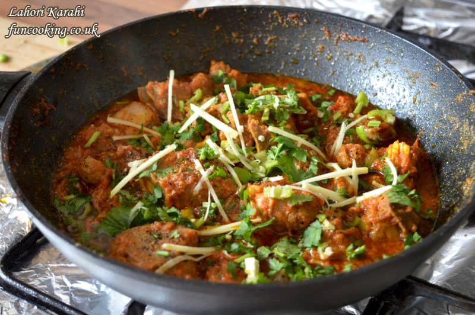

Beef Karahi is a popular Pakistani and Indian dish made with tender pieces of beef cooked in a rich and flavorful tomato-based gravy. The dish is named after the traditional wok-like cooking vessel called "karahi" in which it is prepared. The beef is typically marinated with spices and then cooked with onions, tomatoes, garlic, ginger, and a blend of aromatic spices such as cumin, coriander, turmeric, and red chili powder. The result is a deliciously spicy and savory dish that is often enjoyed with naan or rice.